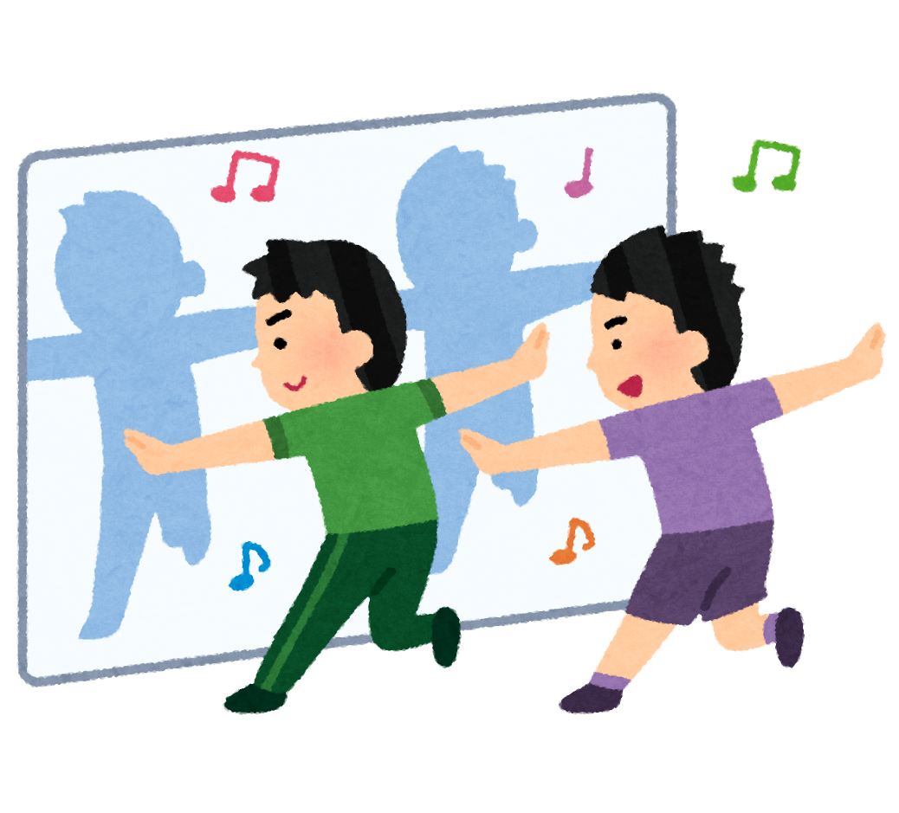
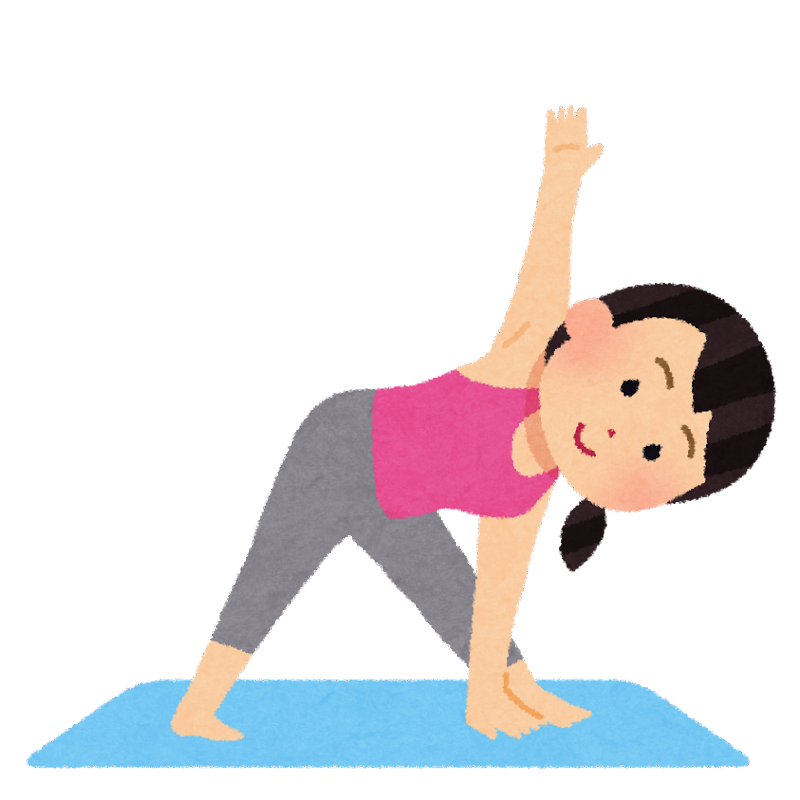
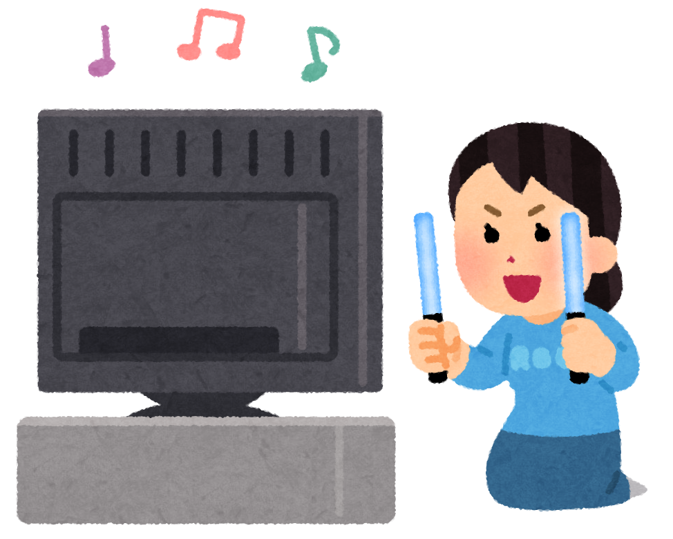
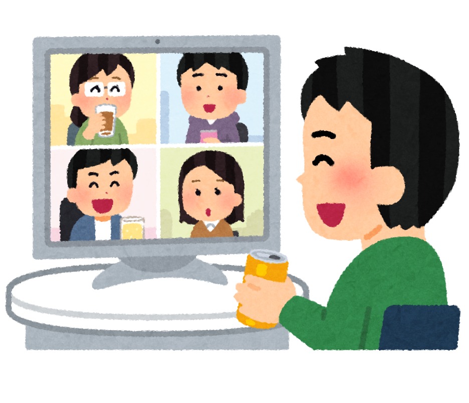

【コロナで自粛のいま！】オススメのお家趣味まとめ
＜自粛中、家でどんなことをしていますか？＞
コロナ禍の今、休日はお家で自粛している方が多くいると思います。自粛が長くなってくると、「家にいる時間が多くて暇を持て余している」
「アウトドアな趣味ができなくて退屈している」「家にこもりきりで気分が下がる」
と感じる人も多いのではないでしょうか。
こんな時こそ、お家でできる新しい趣味を探してみませんか？
目次
アクティブ系
- ダンス
- ヨガ
- 音楽ライブ鑑賞
- オンライン謎解きゲーム
じっくり系
- 刺繍
- 瞑想
- クラシック鑑賞
- ソロゲーム
アクティブ系
1．ダンス

お家でも楽しく過ごしたいという方にはダンスがおすすめです。
今はK-POPブームやtiktokなどのSNSの流行でダンスをする人を沢山見かけますよね。
好きな音楽に合わせて踊れば、楽しいだけではなく、自粛での運動不足の解消にもなって一石二鳥です！
メリット
ダンスを趣味にするメリットとしては、先ほど挙げた様に、楽しく運動不足を解消できるところです。
また、ある程度の広さと音楽さえあれば始められるので、お金がかからないという点もメリットです。
デメリット
デメリットとしては、アパートの2階以上など足音や大きな音が気になる場所ではやりにくいという点です。
踊る曲にもよりますが、多くはステップやジャンプをするため、騒音が気になって中々ダンスを楽しめないかもしれません。
2．ヨガ

室内でできる運動といえばヨガ！自粛で凝り固まった身体もほぐれ、家にいながら健康をキープ出来ます。
また、ダイエット中の方はボディメイクもできるので、モチベーション高く続けられる趣味かもしれません。
メリット
ヨガマットさえあればできるので、はじめやすい趣味と言えます。
最近はYouTubeなどでヨガレッスンの動画がたくさん上がっているので、
何をやったらいいか分からない初心者の方も気軽にできます。
デメリット
身体のかたい人、運動が苦手な人にとっては、ヨガをすることは少し辛いかもしれません。
特に1人でやっていると、途中で心が折れて、続かなくなってしまう可能性もあります。
3．音楽ライブ鑑賞

好きなアーティスト、アイドルがいる方は自宅でライブ鑑賞なんていかがでしょうか？
お家を少し暗くして、食べ物やペンライトを用意すれば、プライベートライブを楽しめます！
最近は小型のプロジェクターを使って、より臨場感のあるお家ライブを楽しむ人も増えています。
メリット
自粛で沈んだ気持ちを上げることができるので、とにかく楽しみたい方にはおすすめです。
空間や食べ物も自分の好きなように用意ができるので、お家で特別感が味わえます。
デメリット
ライブをお家で見るには、ライブDVDやオンラインライブのチケットが必要になります。
そのため、多少お金のかかる趣味かもしれません。
また、好きなアーティストが特にいない方は、お気に入りのアーティスト探しから始まるので少し大変かもしれません。
4．オンライン謎解きゲーム

コロナ前は、様々な会場で脱出ゲームや謎解きゲームが流行っていましたよね。
コロナ禍になり、大勢で集まることができなくなってしまいましたが、
今はオンライン上で友達と謎解き・脱出ゲームができるんです！
ネットで謎解きゲームを購入すると、専用サイトへのリンクやゲームキッドが届きます。
それらを用いて、友達と通話をしながらゲームをしていきます。
メリット
直接会わずに友達と遊べるので、自粛で寂しさを感じている人には特におすすめです。
また、様々な種類の謎解きゲームが出ているので、飽きずに続けられる趣味です。
デメリット
謎解きゲームは3・4時間など長い時間がかかるものも多く、ある程度まとまった時間が必要なため、
ちょっとした時間で趣味を楽しみたい方にはあまりおすすめしません。
また、インターネット環境が必須のため、環境があまり整っていない方も難しいかもしれません。
ページトップに戻る